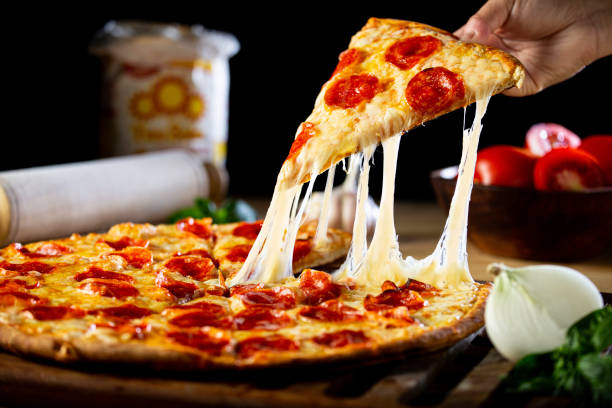

Pizza

Pizza is a popular Italian dish made with a round, flat bread base topped with pizza sauce,
cheese, vegetables, and chicken. It is baked until the crust becomes golden and the cheese melts,
creating a delicious and flavorful meal.
Ingredients
- 1 pizza dough
- ½ cup pizza sauce
- 1 cup mozzarella cheese
- ½ cup cooked chicken
Steps
- Prepare the dough: Roll the pizza dough into a round shape.
- Add pizza sauce: Spread pizza sauce evenly over the dough.
- Add cheese: Sprinkle mozzarella cheese over the sauce.
- Add toppings: Spread cooked chicken, capsicum, onion, tomato, and olives over the cheese.
Back